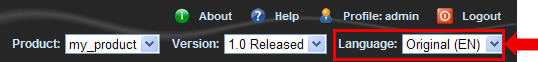
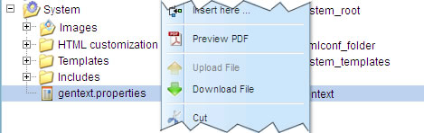

1.13.4. Gentext settings
When you examine exported publications, you will notice that some text parts are automatically generated by Docmenta. For example, the table of contents at the beginning of a publication is generated by Docmenta. Depending on the selected publication language, the generated text can differ. For example, if the publication language is English, the header of the table of contents is "Table of Contents". Instead, if the publication language is German, the generated header is "Inhaltsverzeichnis".
In most cases the system's default generated text should be suitable. However, if you want to change the default generated text, then you can achieve this by editing the file  System > gentext.properties.
System > gentext.properties.
As an example, for publications in English language we'll change the header of the table of contents to "Contents". First of all, select the language for which you want to change the generated text:

Figure 1.13.19. Selecting the language
Then right-click the gentext.properties file and choose "Download" from the context menu, to save the file to your local filesystem:

Figure 1.13.20. Downloading the gentext.properties file
Open the saved file with a regular text editor and search for the line starting with the text "# TableofContents=":
Figure 1.13.21. Editing gentext.properties with a text editor
You will notice that the lines in the file have the format key=value. where key is an identifier and value is the generated text. Lines starting with a "#" character are commented out, i.e. these lines are ignored by Docmenta. Therefore, to overwrite the system's default text, you first have to uncomment the appropriate line by removing the trailing "#" character. Then change the default text "Table of Contents" to "Contents". Be aware that some text phrases have different entries for lower case and upper case. In our example, two entries exist: "TableofContents" and "tableofcontents". However both entries shall generate the same text.
After having applied the changes, the text should look as follows:
Figure 1.13.22. Changed entries for "TableofContents" and "tableofcontents"
Save the changes and upload the changed file by right-clicking the System folder and choosing "Upload" from the context menu. Choose "Browse..." in the upcoming dialog and select the changed file from your local filesystem. Finally, click the "Upload" button. You will then get a warning that a file with the same name already exists

Figure 1.13.23. Overwriting the gentext.properties file
Choose "Overwrite" to replace the system's gentext.properties file by the uploaded file. If you now export a publication in English language, the header of the table of contents will now be "Contents" instead of the default text "Table of Contents".